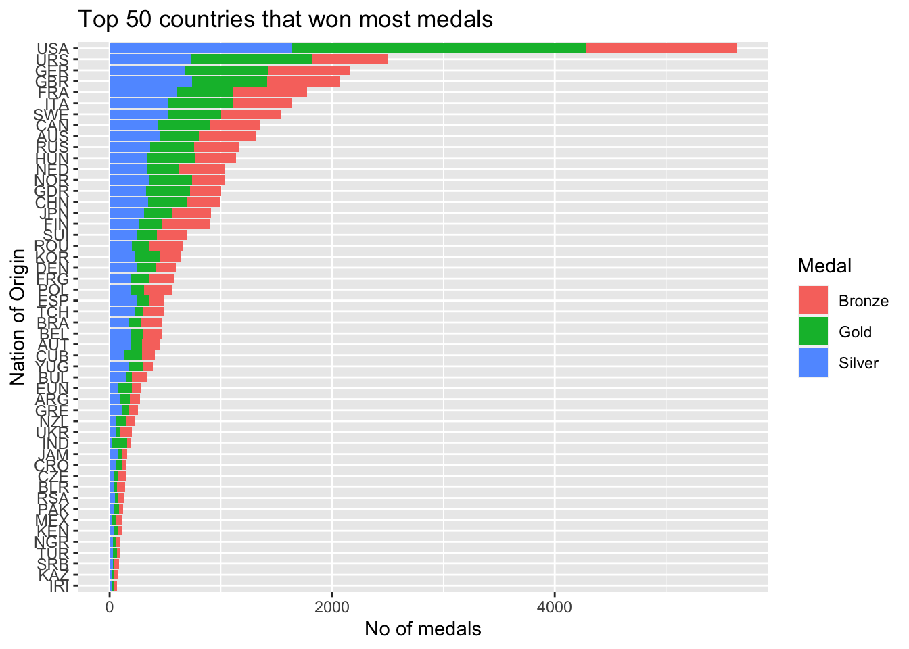
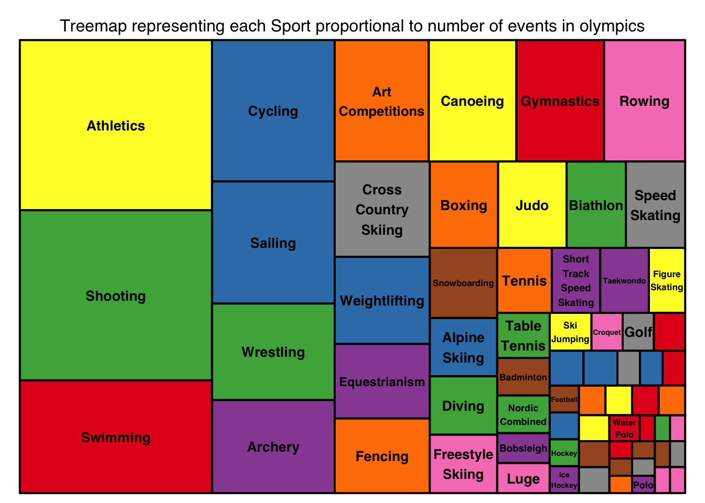
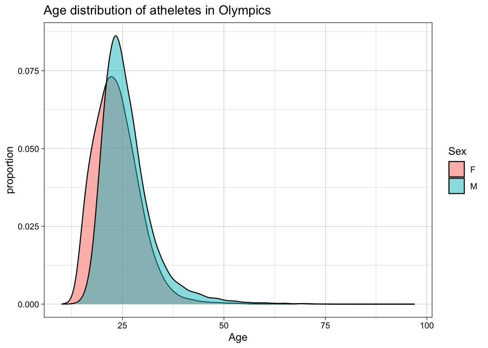
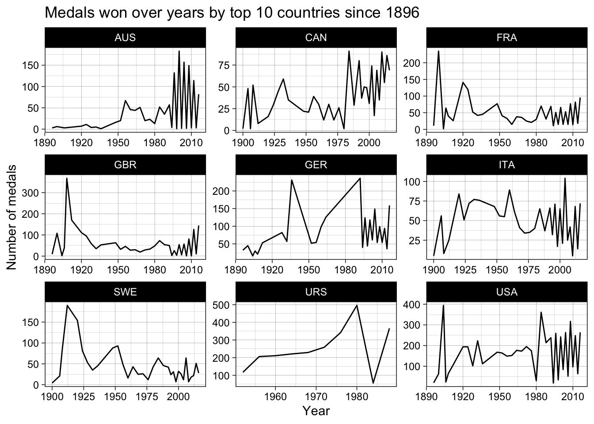

Code
library(tidyverse)
library(ggplot2)
library(treemap)
knitr::opts_chunk$set(echo = TRUE, warning=FALSE, message=FALSE)Srujan Kagitala
July 1, 2023
For my final project, I would do exploratory analysis on the Olympics data right from the year it started in 1896 in Athena till 2016 in Rio de Janeiro.
Olympics is the most decorated sporting event in an athlete’s career. The Olympics are the leading international sporting events featuring summer and winter sports competitions in which thousands of athletes from around the world participate in a variety of competitions. The Olympic Games are considered the world’s foremost sports competition with more than 200 teams, representing sovereign states and territories, participating. The Olympic Games are normally held every four years, and since 1994, have alternated between the Summer and Winter Olympics every two years during the four-year period. The first, second, and third place finishers in each event receive Olympic medals: gold, silver, and bronze, respectively.
The dataset I would use for this analysis is downloaded from Kaggle.
This dataset consists of Olympics data of over a century, from the year 1896 to 2016. Studying this dataset will help to understand the patterns followed in the games of Olympics, patterns of the most successful athletes and countries in their Olympics journey and much more!
# A tibble: 6 × 15
ID Name Sex Age Height Weight Team NOC Games Year Season City
<dbl> <chr> <chr> <dbl> <dbl> <dbl> <chr> <chr> <chr> <dbl> <chr> <chr>
1 1 A Dijiang M 24 180 80 China CHN 1992… 1992 Summer Barc…
2 2 A Lamusi M 23 170 60 China CHN 2012… 2012 Summer Lond…
3 3 Gunnar N… M 24 NA NA Denm… DEN 1920… 1920 Summer Antw…
4 4 Edgar Li… M 34 NA NA Denm… DEN 1900… 1900 Summer Paris
5 5 Christin… F 21 185 82 Neth… NED 1988… 1988 Winter Calg…
6 5 Christin… F 21 185 82 Neth… NED 1988… 1988 Winter Calg…
# ℹ 3 more variables: Sport <chr>, Event <chr>, Medal <chr>The data set has 271116 observations and 15 data points recorded per observation. Each observation records variables like ID, Name, Sex, Age, Height, Weight, Team, NOC, Games, Year, Season, City, Sport, Event, Medal.
The youngest and the oldest athlete that ever participated are 10 and 97 years of age respectively. Athletes from across the world compete in 765 events that happen across 66 sports. These happen in 2 Olympic seasons i.e Summer, Winter.
The dataset is mostly clean and we don’t have to work around much. Although, for doing some analysis, we might need to create various subsets of data like medals, teams, etc, drop na values for a few variables and mutate new variables(Most of these can be done during the analysis). We need to convert categorical variables into factor to get overall summary across various variables. We don’t need the “ID” column for our analysis as it only serves the purpose of a key.
Name Sex Age Height
Robert Tait McKenzie : 58 F: 74522 Min. :10.00 Min. :127.0
Heikki Ilmari Savolainen: 39 M:196594 1st Qu.:21.00 1st Qu.:168.0
Joseph "Josy" Stoffel : 38 Median :24.00 Median :175.0
Ioannis Theofilakis : 36 Mean :25.56 Mean :175.3
Takashi Ono : 33 3rd Qu.:28.00 3rd Qu.:183.0
Alexandros Theofilakis : 32 Max. :97.00 Max. :226.0
(Other) :270880 NA's :9474 NA's :60171
Weight Team NOC Games
Min. : 25.0 United States: 17847 USA : 18853 2000 Summer: 13821
1st Qu.: 60.0 France : 11988 FRA : 12758 1996 Summer: 13780
Median : 70.0 Great Britain: 11404 GBR : 12256 2016 Summer: 13688
Mean : 70.7 Italy : 10260 ITA : 10715 2008 Summer: 13602
3rd Qu.: 79.0 Germany : 9326 GER : 9830 2004 Summer: 13443
Max. :214.0 Canada : 9279 CAN : 9733 1992 Summer: 12977
NA's :62875 (Other) :201012 (Other):196971 (Other) :189805
Year Season City Sport
Min. :1896 Summer:222552 London : 22426 Athletics : 38624
1st Qu.:1960 Winter: 48564 Athina : 15556 Gymnastics: 26707
Median :1988 Sydney : 13821 Swimming : 23195
Mean :1978 Atlanta : 13780 Shooting : 11448
3rd Qu.:2002 Rio de Janeiro: 13688 Cycling : 10859
Max. :2016 Beijing : 13602 Fencing : 10735
(Other) :178243 (Other) :149548
Event Medal
Football Men's Football : 5733 Bronze: 13295
Ice Hockey Men's Ice Hockey : 4762 Gold : 13372
Hockey Men's Hockey : 3958 Silver: 13116
Water Polo Men's Water Polo : 3358 NA's :231333
Basketball Men's Basketball : 3280
Cycling Men's Road Race, Individual: 2947
(Other) :247078 # A tibble: 6 × 14
Name Sex Age Height Weight Team NOC Games Year Season City Sport
<fct> <fct> <dbl> <dbl> <dbl> <fct> <fct> <fct> <dbl> <fct> <fct> <fct>
1 A Dijiang M 24 180 80 China CHN 1992… 1992 Summer Barc… Bask…
2 A Lamusi M 23 170 60 China CHN 2012… 2012 Summer Lond… Judo
3 Gunnar N… M 24 NA NA Denm… DEN 1920… 1920 Summer Antw… Foot…
4 Edgar Li… M 34 NA NA Denm… DEN 1900… 1900 Summer Paris Tug-…
5 Christin… F 21 185 82 Neth… NED 1988… 1988 Winter Calg… Spee…
6 Christin… F 21 185 82 Neth… NED 1988… 1988 Winter Calg… Spee…
# ℹ 2 more variables: Event <fct>, Medal <fct># A tibble: 6 × 14
Name Sex Age Height Weight Team NOC Games Year Season City Sport
<fct> <fct> <dbl> <dbl> <dbl> <fct> <fct> <fct> <dbl> <fct> <fct> <fct>
1 Edgar Li… M 34 NA NA Denm… DEN 1900… 1900 Summer Paris Tug-…
2 Arvo Oss… M 30 NA NA Finl… FIN 1920… 1920 Summer Antw… Swim…
3 Arvo Oss… M 30 NA NA Finl… FIN 1920… 1920 Summer Antw… Swim…
4 Juhamatt… M 28 184 85 Finl… FIN 2014… 2014 Winter Sochi Ice …
5 Paavo Jo… M 28 175 64 Finl… FIN 1948… 1948 Summer Lond… Gymn…
6 Paavo Jo… M 28 175 64 Finl… FIN 1948… 1948 Summer Lond… Gymn…
# ℹ 2 more variables: Event <fct>, Medal <fct>#Type of medals won by teams.
teams_medals_type <- medals %>%
group_by(NOC, Medal) %>%
summarise(count = n())
#Total medals won by teams
teams_medals_total <- medals %>%
group_by(NOC) %>%
summarise(total_medals = n()) %>%
arrange(desc(total_medals))
#Top 50 countries(by total medals won) medal_type tally.
(teams_medals_tally <- inner_join(teams_medals_type,
teams_medals_total[1:50, ],
by = "NOC") %>%
arrange(desc(total_medals)))# A tibble: 150 × 4
# Groups: NOC [50]
NOC Medal count total_medals
<fct> <fct> <int> <int>
1 USA Bronze 1358 5637
2 USA Gold 2638 5637
3 USA Silver 1641 5637
4 URS Bronze 689 2503
5 URS Gold 1082 2503
6 URS Silver 732 2503
7 GER Bronze 746 2165
8 GER Gold 745 2165
9 GER Silver 674 2165
10 GBR Bronze 651 2068
# ℹ 140 more rows#Bar plot of medals won by top 50 countries.
ggplot(data = teams_medals_tally , aes(x= reorder(NOC, total_medals), y = count)) +
geom_bar(stat = "identity",
mapping = aes(fill = Medal),
position = "stack") +
labs(title ="Top 50 countries that won most medals",
y = "No of medals",
x = "Nation of Origin",
fill = "Medal")+
coord_flip()
We can see that USA has won the highest number of medals, more than double the number of medals won by Soviet Union.
# A tibble: 66 × 2
Sport no_events
<fct> <int>
1 Athletics 83
2 Shooting 83
3 Swimming 55
4 Cycling 44
5 Sailing 38
6 Wrestling 30
7 Archery 29
8 Art Competitions 29
9 Canoeing 27
10 Gymnastics 27
# ℹ 56 more rows#Treemap representing each Sport proportional to number of events in olympics
treemap(sport_events,
index = "Sport",
vSize = "no_events",
type = "index",
fontsize.labels = 10,
fontcolor.labels = "black",
align.labels=list(
c("center", "center")),
inflate.labels=F,
palette = "Set1",
title="Treemap representing each Sport proportional to number of events in olympics",
fontsize.title=12)
Athletics and shooting are the sports with highest number of events (83 events each) followed by swimming with 55 events.

We can see that the mean age of men athletes is higher than the mean age of women athletes. Most frequent age in men athletes is approximately equal to the most frequent age in women athletes.
#Times series for how top 10 nations performed over years.
teams_medals_yearly <- medals %>%
filter(NOC %in% teams_medals_total[1:9,]$NOC) %>%
group_by(NOC, Year) %>%
summarise(total_medals = n()) %>%
arrange(NOC,Year)
ggplot(teams_medals_yearly,
aes(x= Year, y = total_medals)) +
geom_line() +
facet_wrap(~NOC, scales = "free") +
#scale_x_continuous(breaks = c(2015, 2016, 2017),
#labels = c("2015", "2016", "2017")) +
theme_linedraw()+
labs(title = "Medals won over years by top 10 countries since 1896",
x = "Year",
y = "Number of medals")
---
title: "Homework 2"
author: "Srujan Kagitala"
description: "Homework 2"
date: "7/1/2023"
format:
html:
toc: true
code-fold: true
code-copy: true
code-tools: true
categories:
- hw2
- olympics
- srujan_kagitala
---
```{r}
#| label: setup
#| warning: false
#| message: false
library(tidyverse)
library(ggplot2)
library(treemap)
knitr::opts_chunk$set(echo = TRUE, warning=FALSE, message=FALSE)
```
## Overview
For my final project, I would do exploratory analysis on the Olympics data right from the year it started in 1896 in Athena till 2016 in Rio de Janeiro.
### Olympics
Olympics is the most decorated sporting event in an athlete's career. The Olympics are the leading international sporting events featuring summer and winter sports competitions in which thousands of athletes from around the world participate in a variety of competitions. The Olympic Games are considered the world's foremost sports competition with more than 200 teams, representing sovereign states and territories, participating. The Olympic Games are normally held every four years, and since 1994, have alternated between the Summer and Winter Olympics every two years during the four-year period. The first, second, and third place finishers in each event receive Olympic medals: gold, silver, and bronze, respectively.
## Dataset
The dataset I would use for this analysis is downloaded from
[Kaggle](https://www.kaggle.com/datasets/samruddhim/olympics-althlete-events-analysis).
This dataset consists of Olympics data of over a century, from the year 1896 to 2016. Studying this dataset will help to understand the patterns followed in the games of Olympics, patterns of the most successful athletes and countries in their Olympics journey and much more!
```{r}
#| label: read
olympics_data <- read_csv("_data/athlete_events_olympics.csv")
head(olympics_data)
```
The data set has `r nrow(olympics_data)` observations and `r ncol(olympics_data)` data points recorded per observation. Each observation records variables like `r names(olympics_data)`.
The youngest and the oldest athlete that ever participated are `r min(olympics_data$Age, na.rm = TRUE)` and `r max(olympics_data$Age, na.rm = TRUE)` years of age respectively. Athletes from across the world compete in `r length(unique(olympics_data$Event))` events that happen across `r length(unique(olympics_data$Sport))` sports. These happen in `r length(unique(olympics_data$Season))` Olympic seasons i.e `r unique(olympics_data$Season)`.
## Data Cleaning
The dataset is mostly clean and we don't have to work around much. Although, for doing some analysis, we might need to create various subsets of data like medals, teams, etc, drop na values for a few variables and mutate new variables(Most of these can be done during the analysis). We need to convert categorical variables into factor to get overall summary across various variables. We don't need the "ID" column for our analysis as it only serves the purpose of a key.
```{r}
#| label: clean
olympics_data <- olympics_data %>%
mutate_if(is_character, as.factor) %>%
select(-ID)
medals <- olympics_data %>%
filter(!is.na(Medal))
summary(olympics_data)
head(olympics_data)
head(medals)
```
## Insights
```{r}
#| label: insight_1
#Type of medals won by teams.
teams_medals_type <- medals %>%
group_by(NOC, Medal) %>%
summarise(count = n())
#Total medals won by teams
teams_medals_total <- medals %>%
group_by(NOC) %>%
summarise(total_medals = n()) %>%
arrange(desc(total_medals))
#Top 50 countries(by total medals won) medal_type tally.
(teams_medals_tally <- inner_join(teams_medals_type,
teams_medals_total[1:50, ],
by = "NOC") %>%
arrange(desc(total_medals)))
#Bar plot of medals won by top 50 countries.
ggplot(data = teams_medals_tally , aes(x= reorder(NOC, total_medals), y = count)) +
geom_bar(stat = "identity",
mapping = aes(fill = Medal),
position = "stack") +
labs(title ="Top 50 countries that won most medals",
y = "No of medals",
x = "Nation of Origin",
fill = "Medal")+
coord_flip()
```
We can see that USA has won the highest number of medals, more than double the number of medals won by Soviet Union.
```{r}
#| label: insight_2
#Sport with events count
(sport_events <- olympics_data %>%
distinct(Sport, Event) %>%
group_by(Sport) %>%
summarise(no_events = n()) %>%
arrange(desc(no_events)))
#Treemap representing each Sport proportional to number of events in olympics
treemap(sport_events,
index = "Sport",
vSize = "no_events",
type = "index",
fontsize.labels = 10,
fontcolor.labels = "black",
align.labels=list(
c("center", "center")),
inflate.labels=F,
palette = "Set1",
title="Treemap representing each Sport proportional to number of events in olympics",
fontsize.title=12)
```
Athletics and shooting are the sports with highest number of events (`r sport_events$no_events[1]` events each) followed by swimming with `r sport_events$no_events[3]` events.
```{r}
#| label: insight_3
#Age distribution among females and males in olympics.
ggplot(olympics_data, aes(x = Age, fill = Sex, na.rm = TRUE)) +
geom_density(adjust=2, alpha = 0.5) +
theme_linedraw() +
labs(title = "Age distribution of atheletes in Olympics",
x = "Age",
y = "proportion")
```
We can see that the mean age of men athletes is higher than the mean age of women athletes.
Most frequent age in men athletes is approximately equal to the most frequent age in women athletes.
```{r}
#| label: insight_4
#Times series for how top 10 nations performed over years.
teams_medals_yearly <- medals %>%
filter(NOC %in% teams_medals_total[1:9,]$NOC) %>%
group_by(NOC, Year) %>%
summarise(total_medals = n()) %>%
arrange(NOC,Year)
ggplot(teams_medals_yearly,
aes(x= Year, y = total_medals)) +
geom_line() +
facet_wrap(~NOC, scales = "free") +
#scale_x_continuous(breaks = c(2015, 2016, 2017),
#labels = c("2015", "2016", "2017")) +
theme_linedraw()+
labs(title = "Medals won over years by top 10 countries since 1896",
x = "Year",
y = "Number of medals")
```
## Research Questions
1. Is there an unbiased ranking system to determine the rankings of nations in Olympics? Can we rank different nations on varied ranking systems (different weightage for gold, silver and bronze) and observe how their ranks differ based on weightage given to gold, silver and bronze medals?
2. Can we identify the most decorated athlete of all time, most decorated men and women athlete?
3. Can we identify the age of men and women athletes where their performance is maximized? Does this differ for countries?
4. Can we identify if there is a correlation of features like height/weight/age to a specific sports? (For example if height positively impacts basketball, age helps in shooting or athletics, etc.) Does it equally hold for both the genders?